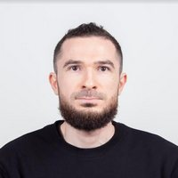

About Me
My name is Anton. I live in Georgia, small town of Bakuriani. It is a ski resort and in Winter we have a lot of tourists. But off the ski season it is very quiet here, which make Bakuriani an ideal place for me to work and study remotely. I like programming and hope to finish my Bachelor's Degree at BYU-Idaho in the next 2 years.
Bakuriani, Georgia
Bakuriani (Georgian: ბაკურიანი) is a daba and a ski resort in the Borjomi district of Georgia. It is located on the northern slope of the Trialeti Range, at an elevation of 1,700 meters (5,576 feet) above sea level.